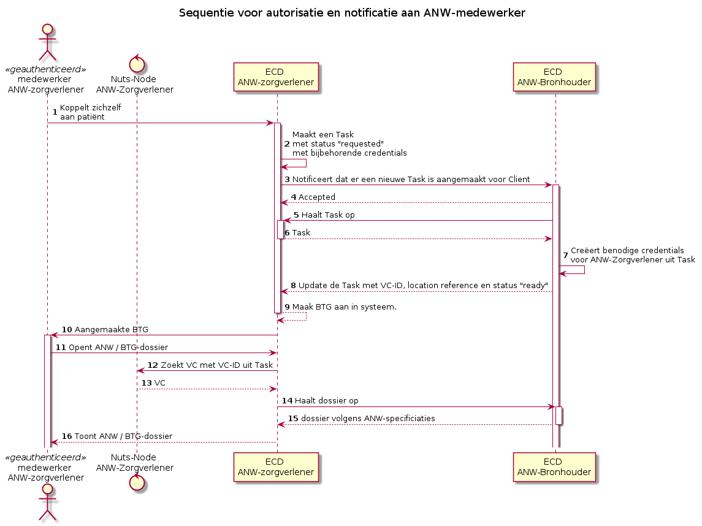

Netherlands - ANW implementation guide
0.1.0 - ci-build

Netherlands - ANW implementation guide
0.1.0 - ci-build

Netherlands - ANW implementation guide - Local Development build (v0.1.0) built by the FHIR (HL7® FHIR® Standard) Build Tools. See the Directory of published versions
Datum 15 april 2026
Breaking the glass (BTG) maakt het mogelijk dat een zorgverlener tijdelijk toegang aanvraagt tot de gegevens van een patiënt, zonder tussenkomst van een ANW-Regisseur. Het proces verloopt rechtstreeks tussen het systeem van de ANW-Zorgverlener en de ANW-Bronhouder. De ANW-Bronhouder verwerkt het verzoek en geeft het credential uit waarmee de zorgverlener toegang krijgt.
Net als bij de reguliere ANW begint BTG met een expliciete toestemming van de bronhouder aan de zorgverlener. Deze toestemming wordt eenmalig vastgelegd in een NutsAuthorizationCredential. Op basis van dit credential weet het systeem van de ANW-Zorgverlener bij welke bronhouders breaking the glass toegepast mag worden.
De ANW-Bronhouder geeft eenmalig een NutsAuthorizationCredential uit aan de ANW-Zorgverlener. Dit credential geeft het systeem van de ANW-Zorgverlener toestemming om gericht naar patiënten bij de bronhouder te zoeken. Zo kan de zorgverlener de juiste patiënt selecteren voordat het BTG-autorisatieverzoek wordt ingediend. Het credential geeft daarnaast toestemming om de bronhouder over dat verzoek te notificeren.
De volgende velden zijn relevant:
| Veld | Omschrijving |
|---|---|
credentialSubject.id |
Het DID van de ANW-Zorgverlener die gemachtigd is om BTG toe te passen. |
purposeOfUse |
Identificeert dit credential als een BTG-toestemming (ANW-BTG-Bronhouder-ZorgverlenerToegang). |
resources[].path |
Het FHIR-pad waarop de operatie is toegestaan, bijvoorbeeld voor het zoeken naar patiënten of het versturen van een notificatie. |
resources[].operations |
De toegestane FHIR-operaties op het opgegeven pad (search, create). |
resources[].userContext |
Geeft per operatie aan of een gebruikerscontext vereist is. Voor het zoeken naar patiënten is dit true: het systeem stuurt de context van de ingelogde zorgverlener mee. Voor het versturen van de notificatie is dit false, zoals in het onderstaande voorbeeld. |
Voorbeeld NutsAuthorizationCredential:
{
"verifiableCredential": {
"@context": [
"https://nuts.nl/credentials/v1",
"https://www.w3.org/2018/credentials/v1",
"https://w3c-ccg.github.io/lds-jws2020/contexts/lds-jws2020-v1.json"
],
"type": [
"NutsAuthorizationCredential",
"VerifiableCredential"
],
"credentialSubject": {
"id": "did:nuts:{DID van ANW-Zorgverlener}",
"purposeOfUse": "ANW-BTG-Bronhouder-ZorgverlenerToegang",
"resources": [
{
"operations": [
"search"
],
"path": "/Patient/_search?_query=anw",
"userContext": true
},
{
"operations": [
"create"
],
"path": "/notification",
"userContext": false
}
]
},
"proof": {
"created": "2024-01-18T16:27:52.939738279+01:00",
"jws": "eyJhbGciOiJFU......",
"proofPurpose": "assertionMethod",
"type": "JsonWebSignature2020",
"verificationMethod": "did:nuts:Eb1U3ap94wcziQhUfZSW........"
}
}
}
Het systeem van de ANW-Zorgverlener stuurt bij het zoeken naar patiënten de gebruikerscontext van de ingelogde zorgverlener mee. Daarmee kan de ANW-Bronhouder de aanvraag aan een geïdentificeerde gebruiker koppelen.
De aanvraag bevat zoekparameters om gericht naar de betreffende patiënt te zoeken. In de reguliere ANW-flow haalt de regisseur een patiëntenlijst op en filtert die zelf. Bij BTG voert de ANW-Bronhouder de zoekopdracht uit voordat de resultaten worden teruggestuurd.
Voor dataminimalisatie vraagt het systeem van de ANW-Zorgverlener via _elements de patiëntgegevens op die nodig zijn voor de selectie: name, address en birthDate. De ANW-Bronhouder controleert of deze parameter aanwezig is. De afspraken voor deze query beperken de patiëntgegevens in de respons tot deze velden. Pas nadat het BTG-autorisatieverzoek is goedgekeurd, kan het systeem met het credential voor gegevensinzage aanvullende patiëntgegevens ophalen.
anwVoor het zoeken naar patiënten in de BTG-flow wordt een nieuwe named query geïntroduceerd: anw. Deze vervangt voor deze flow het gebruik van de bestaande ANW-zorg-query.
Het systeem van de ANW-Zorgverlener voert deze query uit bij de ANW-Bronhouder via POST /Patient/_search?_query=anw. De parameters _query en _elements staan in de URL. De patiëntgebonden zoekparameters (name en birthdate) worden als application/x-www-form-urlencoded in de requestbody meegestuurd. Deze aanroep maakt gebruik van de standaard FHIR STU3 POST-search.
Door patiëntgebonden zoekwaarden in de body te versturen, komen deze niet in de request-URL terecht. Dit beperkt het risico dat de waarden in URL-logs worden opgeslagen. Dezelfde aanroep kan in de toekomst worden uitgebreid met zoeken op BSN. Een BSN-filter maakt nog geen deel uit van deze query.
Voor de query anw gelden de volgende afspraken:
name en/of birthdate. Minimaal één van beide is verplicht; een combinatie is toegestaan._elements alleen de patiëntgegevens name, address en birthDate op. De ANW-Bronhouder controleert of de parameter aanwezig is.De zoekparameter name bepaalt waarop wordt gezocht. In _elements=name,address,birthDate verwijst name naar het veld dat in de respons wordt teruggegeven. De zoekparameter en de selectie van responsvelden hebben dus elk een eigen functie.
Voorbeeld van een zoekaanvraag:
POST /Patient/_search?_query=anw&_elements=name,address,birthDate HTTP/1.1
Host: bronhouder.example.nl
Accept: application/fhir+json
Content-Type: application/x-www-form-urlencoded
name=Jansen&birthdate=1980-01-01
De aparte named query voorkomt dat bestaande integraties met ANW-zorg door deze aanvullende afspraken veranderen. De nieuwe query heeft een eigen contract voor gericht zoeken, gebruikerscontext en beperkte responsvelden. De naam anw koppelt de query aan de ANW-usecase. Daardoor kan ook het systeem van de ANW-Regisseur deze query gebruiken zodra het de bijbehorende afspraken ondersteunt.
Nadat de zorgverlener de juiste patiënt heeft geselecteerd, verloopt de BTG-flow zoals weergegeven in het onderstaande sequentiediagram. Omdat er geen regisseur aanwezig is, communiceert het systeem van de zorgverlener rechtstreeks met de bronhouder.

Het systeem van de ANW-Zorgverlener maakt een Task-resource aan die is afgeleid van de ANW-Task, met status requested. Het stelt de Task beschikbaar en stuurt de ANW-Bronhouder een notificatie. De ANW-Bronhouder haalt vervolgens de Task op en verwerkt deze als BTG-autorisatieverzoek, zoals weergegeven in het sequentiediagram.
De volgende velden zijn relevant:
| Veld | Omschrijving |
|---|---|
status |
De status van het autorisatieverzoek. Bij het aanmaken van de Task is dit requested. |
code.coding[].code |
Identificeert dit verzoek als een BTG-autorisatieverzoek (ANW-BTG-autorisatie-verzoek). Hiermee kan de bronhouder onderscheid maken tussen een reguliere ANW-flow en een BTG-flow. |
for |
Verwijzing naar de patiënt voor wie toegang wordt gevraagd. |
authoredOn |
Tijdstip waarop het autorisatieverzoek is aangemaakt. |
requester.agent |
Het systeem of de organisatie van de ANW-Zorgverlener die het verzoek indient. |
requester.onBehalfOf |
De autoriserende partij (de bronhouder als data-eigenaar). |
owner |
De partij die toegang vraagt tot de gegevens. |
reason.text |
Verplicht veld waarin de zorgverlener de reden voor het BTG-verzoek toelicht. Dit is vrije tekst die door de gebruiker wordt ingevuld, met een maximum van 2000 karakters. |
restriction.period |
De periode waarvoor de tijdelijke toegang wordt gevraagd. |
restriction.recipient |
De zorgverlener die de toegang ontvangt. |
Voorbeeld FHIR Task:
{
"resourceType": "Task",
"id": "af10c4c8-bc4d-40c7-a335-fb63fe7158d3",
"meta": {
"profile": [
"https://nuts.nl/fhir/StructureDefinition/nl-core-authorization-request"
]
},
"status": "requested",
"intent": "order",
"code": {
"coding": [
{
"code": "ANW-BTG-autorisatie-verzoek"
}
]
},
"for": {
"reference": "Patient/{patientId}",
"display": "Naam van de geselecteerde patiënt"
},
"authoredOn": "2024-01-23T13:23:42.1885689+00:00",
"requester": {
"agent": {
"identifier": {
"system": "http://nuts.nl",
"value": "{DID ANW-Zorgverlener}"
},
"display": "ANW-Zorgverlener A"
},
"onBehalfOf": {
"identifier": {
"system": "http://nuts.nl",
"value": "{DID van ANW-Bronhouder}"
},
"display": "ANW-Bronhouder"
}
},
"owner": {
"identifier": {
"system": "http://nuts.nl",
"value": "{DID van ANW-Zorgverlener}"
},
"display": "ANW-Zorgverlener A"
},
"reason": {
"text": "{verplichte toelichting van de zorgverlener}"
},
"restriction": {
"period": {
"start": "2024-01-23T14:23:42.2264869+01:00",
"end": "2024-01-26T13:23:42.2295674+00:00"
},
"recipient": [
{
"reference": "Practitioner/{practitionerId}",
"display": "Zorgverlener die toegang krijgt"
}
]
}
}
De BTG-Task verschilt op twee punten van de ANW-Task:
code - De code ANW-BTG-autorisatie-verzoek onderscheidt dit verzoek expliciet van een regulier ANW-autorisatieverzoek. De bronhouder gebruikt deze code om de juiste verwerkingslogica toe te passen.reason.text - Dit veld is bij de BTG-Task verplicht. Waar het veld bij de reguliere ANW-Task wordt gebruikt voor instructies, bevat het hier een door de gebruiker ingevulde toelichting op de reden voor het toepassen van breaking the glass. De toelichting bevat maximaal 2000 karakters; zie Maximale lengte van reason.text.Nadat de ANW-Bronhouder het BTG-autorisatieverzoek heeft verwerkt en goedgekeurd, geeft deze een NutsAuthorizationCredential uit voor de betreffende patiënt. De purposeOfUse is ANW-BTG-Bronhouder-Gegevensinzage. Daarmee is herkenbaar dat het om toegang via BTG gaat.
De ANW-Bronhouder werkt de Task bij naar status ready en voegt de verwijzing naar het uitgegeven credential toe. Het systeem van de ANW-Zorgverlener gebruikt deze verwijzing om het credential op te halen en de patiëntgegevens bij de ANW-Bronhouder op te vragen.
Schematisch voorbeeld van het credential voor gegevensinzage. De patiëntgebonden toegangsrechten in resources zijn nog niet uitgewerkt:
{
"verifiableCredential": {
"@context": [
"https://nuts.nl/credentials/v1",
"https://www.w3.org/2018/credentials/v1",
"https://w3c-ccg.github.io/lds-jws2020/contexts/lds-jws2020-v1.json"
],
"type": [
"NutsAuthorizationCredential",
"VerifiableCredential"
],
"credentialSubject": {
"id": "did:nuts:{DID van ANW-Zorgverlener}",
"purposeOfUse": "ANW-BTG-Bronhouder-Gegevensinzage",
"resources": [
// Patiëntgebonden toegangsrechten: nog uit te werken.
]
},
"proof": {
"created": "2026-04-29T15:39:46.873044983+02:00",
"jws": "eyJhbGciOiJFU......",
"proofPurpose": "assertionMethod",
"type": "JsonWebSignature2020",
"verificationMethod": "did:nuts:Eb1U3ap94wcziQhUfZSW........"
}
}
}